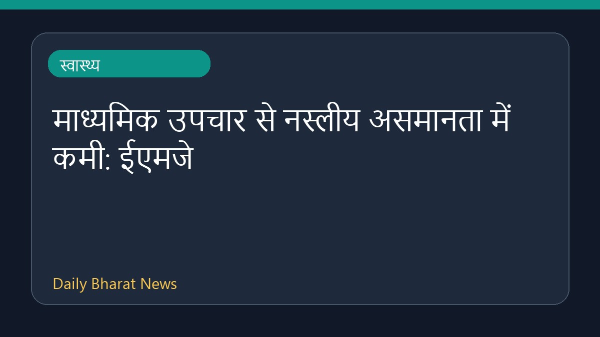

माध्यमिक उपचार से नस्लीय असमानता में कमी: ईएमजे

ईएमजे स्वास्थ्य समाचार के अनुसार, माध्यमिक उपचार और नस्लीय उत्तरजीविता असमानताओं में कमी के बीच संबंध पाया गया है। रिपोर्ट में बताया गया है कि किस प्रकार बेहतर चिकित्सा हस्तक्षेप स्वास्थ्य संबंधी दूरियों को पाटने में मदद कर सकता है। इस विषय पर विस्तृत जानकारी सीमित है, क्योंकि आरएसएस विवरण में केवल यह संक्षिप्त संकेत दिया गया है कि नस्लीय अंतराल को कम करने में अतिरिक्त देखभाल महत्वपूर्ण भूमिका निभाती है। चिकित्सा क्षेत्र में समानता लाने के लिए इस दिशा में और अधिक अध्ययन की आवश्यकता पर बल दिया जा रहा है।
मूल स्रोत: Health News Sources
Secondary Treatment Linked to Reduced Racial Survival Disparities - EMJ ↗
Secondary Treatment Linked to Reduced Racial Survival Disparities - EMJ ↗